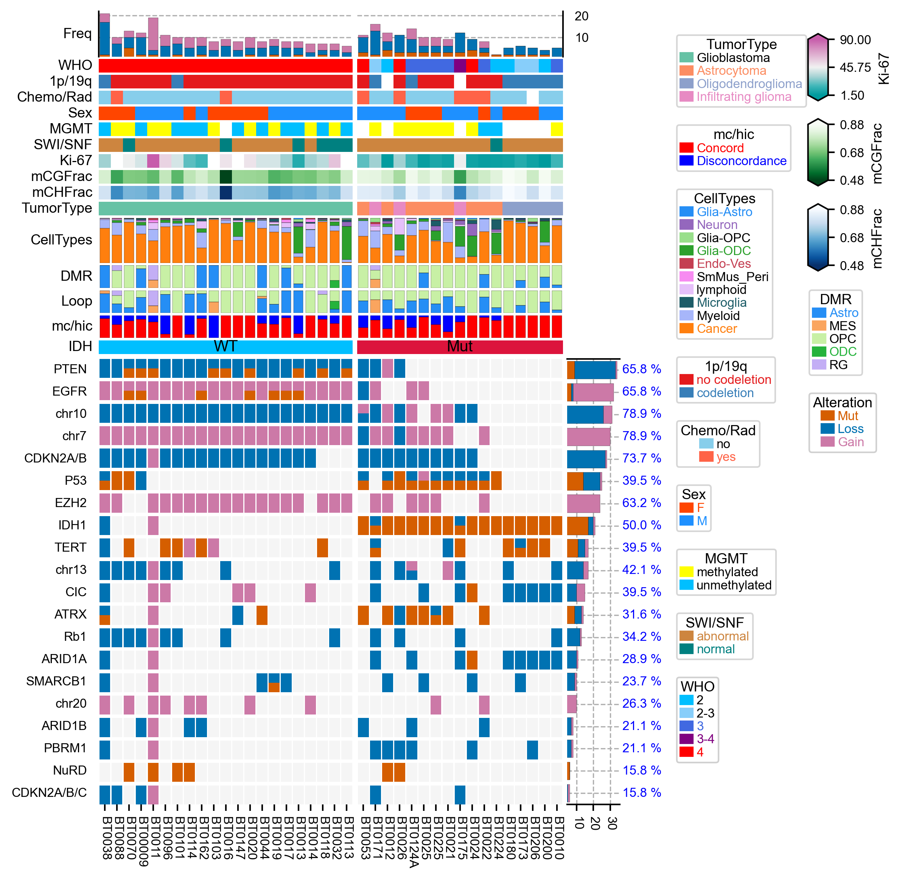
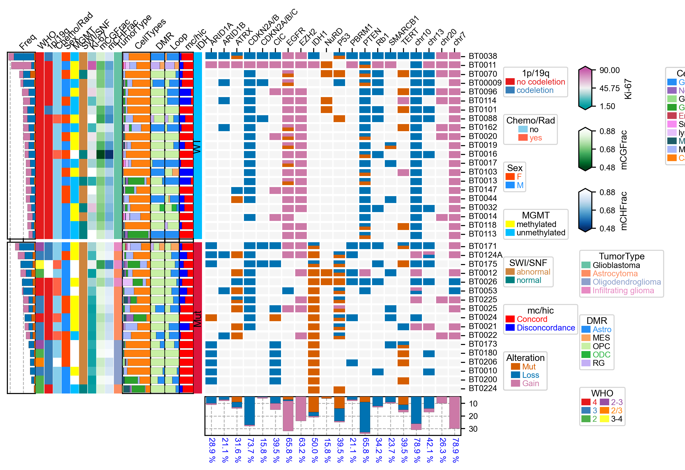

[137]:
import os,sys
import pandas as pd
import numpy as np
import matplotlib.pylab as plt
from PyComplexHeatmap import oncoPrintPlotter,HeatmapAnnotation,anno_simple,anno_barplot,anno_label
from PyComplexHeatmap.utils import despine
plt.rcParams.update({
'font.family': 'sans-serif',
'font.sans-serif': 'Arial',
'font.family': 'Arial',
# Base font size (set so text is ~7–8 pt at final print size)
'font.size': 8, # main text (labels, ticks, legend)
'axes.labelsize': 9, # axis labels (x/y)
'axes.titlesize': 10, # panel titles / figure titles
'figure.titlesize':11,
'xtick.labelsize': 8, # x-tick labels
'ytick.labelsize': 8, # y-tick labels
'legend.fontsize': 8, # legend text
'legend.title_fontsize': 9, # legend title (if used)
# Lines and elements for clarity
'lines.linewidth': 1.2, # data lines
'axes.linewidth': 1.0, # axis spines
'xtick.major.width': 1.0,
'ytick.major.width': 1.0,
'xtick.major.size': 4,
'ytick.major.size': 4,
# General figure appearance
'figure.dpi': 300, # high resolution for export
'savefig.dpi': 300, # when using plt.savefig()
'figure.figsize': (6.5, 4.5), # example starting size (adjust to your needs; e.g., ~17 cm wide for full page)
'savefig.transparent': True,
'savefig.bbox': 'tight',
'pdf.fonttype':42,
'ps.fonttype':42,
})
[138]:
! ls /anvil/projects/x-mcb130189/maywu/GBM/analysis/15.oncoprint/
# ! cp /anvil/projects/x-mcb130189/maywu/GBM/analysis/15.oncoprint/Metadata_Salk_methylation_combined_02022026.csv metadata.csv
# https://docs.google.com/spreadsheets/d/1HlihgxqEILyKBlEZQvkYSGyCEyJVIhBG-nqp6maHyxo/edit?usp=sharing
! cat /anvil/projects/x-mcb130189/maywu/GBM/analysis/15.oncoprint/color_palette.txt
color_palette.txt sample-loop-state-perc.csv
Metadata_Salk_methylation_combined_02022026.csv sample-mcfrac.csv
sample-celltype-perc.csv sample-mchic-state-perc.csv
sample-dmr-state-perc.csv
palette_celltype = {'Glia-Astro': '#258EF5', 'Neuron': '#9467bd',
'Glia-OPC': '#98df8a', 'Glia-ODC': '#2ca02c','RG':'#c5b0d5', 'Endo-Ves': '#c43f52',
'SmMus_Peri':'#F78BF1','lymphoid':'#e6c0fa','Microglia':'#1d5d68','Myeloid':'#A7B6FA',
'Cancer':'#ff7f0e'} # 'ODC': '#2ca02c', ,'Cancer-WT': '#1f77b4','MES': '#ffbb78',
palette_idh = {'WT': '#1f77b4', 'Mut':'#ff7f0e' }
palette_state = {'Astro': '#258EF5', 'MES':'#faa55f','OPC':'#C8F0A5','ODC':'#25B33C', 'RG':'#C3AEF5','Neu':'#884BCC','Normal':'#CCCCCC'}
[139]:
indir="/anvil/projects/x-mcb130189/maywu/GBM/analysis/15.oncoprint"
Data preprocessing¶
[140]:
# metadata=pd.read_csv(os.path.join(indir,"Metadata_Salk_methylation_combined_02022026.csv"),index_col=0)
# metadata.to_excel('metadata.xlsx')
[256]:
metadata=pd.read_excel("metadata.xlsx",index_col=0).drop_duplicates()
df_donor=metadata.iloc[:,:7].drop_duplicates()
df_oncoprint=metadata.iloc[:,7:].drop_duplicates()
for col in ['1p/19q Codel','Chemo/Rad']:
df_donor[col]=df_donor[col].apply(lambda x:str(int(x)) if not pd.isna(x) else '')
df_donor['Ki-67']=df_donor['Ki-67'].apply(lambda x:int(x.replace('%','')) if not pd.isna(x) and '-' not in x else np.mean([int(i) for i in x.replace('%','').split('-')]) if not pd.isna(x) else np.nan)
df_donor.head()
[256]:
| WHO | 1p/19q Codel | Chemo/Rad | Sex | MGMT methylation | SWI/SNF Complex | Ki-67 | |
|---|---|---|---|---|---|---|---|
| BT0002 | 3 | 2 | 0 | F | methylated | abnormal | 20.0 |
| BT0003 | 3-4 | 2 | 0 | F | methylated | abnormal | 15.0 |
| BT0008 | 4 | 0 | 0 | M | methylated | abnormal | 75.0 |
| BT00009 | 4 | 0 | 0 | M | unmethylated | abnormal | 40.0 |
| BT0010 | 3 | 2 | 0 | M | methylated | abnormal | 15.0 |
[257]:
# add more mCG, mCH, tumor_type
df=pd.read_csv(os.path.join(indir,"sample-mcfrac.csv"),index_col=0)
for col in df.columns.tolist():
df_donor[col]=df_donor.index.to_series().map(df[col].to_dict())
print(df_donor.shape)
df_donor.head()
(47, 11)
[257]:
| WHO | 1p/19q Codel | Chemo/Rad | Sex | MGMT methylation | SWI/SNF Complex | Ki-67 | mCGFrac | mCHFrac | IDH | tumor_type | |
|---|---|---|---|---|---|---|---|---|---|---|---|
| BT0002 | 3 | 2 | 0 | F | methylated | abnormal | 20.0 | NaN | NaN | NaN | NaN |
| BT0003 | 3-4 | 2 | 0 | F | methylated | abnormal | 15.0 | NaN | NaN | NaN | NaN |
| BT0008 | 4 | 0 | 0 | M | methylated | abnormal | 75.0 | NaN | NaN | NaN | NaN |
| BT00009 | 4 | 0 | 0 | M | unmethylated | abnormal | 40.0 | 0.688519 | 0.008883 | WT | Glioblastoma |
| BT0010 | 3 | 2 | 0 | M | methylated | abnormal | 15.0 | 0.809730 | 0.007309 | Mut | Oligodendroglioma |
[258]:
# add celltype percentage
df_ct_frac=pd.read_csv(os.path.join(indir,"sample-celltype-perc.csv"),index_col=0).T
print(df_ct_frac.shape)
df_ct_frac.head()
(43, 10)
[258]:
| celltype-L1 | Cancer | Myeloid | Glia-ODC | lymphoid | Neuron | Microglia | SmMus_Peri | Endo-Ves | Glia-OPC | Glia-Astro |
|---|---|---|---|---|---|---|---|---|---|---|
| BT00009 | 0.649351 | 0.186147 | 0.067821 | 0.024531 | 0.027417 | 0.031746 | 0.000000 | 0.000000 | 0.012987 | 0.000000 |
| BT0010 | 0.830759 | 0.124614 | 0.014418 | 0.000000 | 0.020941 | 0.000000 | 0.000000 | 0.000000 | 0.000000 | 0.009269 |
| BT0011 | 0.496812 | 0.250435 | 0.000000 | 0.151304 | 0.000000 | 0.000000 | 0.057971 | 0.043478 | 0.000000 | 0.000000 |
| BT0012 | 0.641195 | 0.162904 | 0.070511 | 0.000000 | 0.056617 | 0.043071 | 0.000000 | 0.009378 | 0.000695 | 0.015630 |
| BT0013 | 0.140892 | 0.082528 | 0.578439 | 0.000000 | 0.086245 | 0.022305 | 0.005948 | 0.000000 | 0.057249 | 0.026394 |
[259]:
df_dmr_state=pd.read_csv(os.path.join(indir,"sample-dmr-state-perc.csv"),index_col=0).T
print(df_dmr_state.shape)
df_dmr_state.head()
(43, 5)
[259]:
| dmr_state | Astro | MES | ODC | OPC | RG |
|---|---|---|---|---|---|
| BT00009 | 0.862222 | 0.000000 | 0.0 | 0.137778 | 0.000000 |
| BT0010 | 0.146523 | 0.000000 | 0.0 | 0.853477 | 0.000000 |
| BT0011 | 0.000000 | 0.352246 | 0.0 | 0.000000 | 0.647754 |
| BT0012 | 0.000000 | 0.000000 | 0.0 | 1.000000 | 0.000000 |
| BT0013 | 0.184697 | 0.000000 | 0.0 | 0.815303 | 0.000000 |
[260]:
df_loop_state=pd.read_csv(os.path.join(indir,"sample-loop-state-perc.csv"),index_col=0).T
print(df_loop_state.shape)
df_loop_state.head()
(43, 5)
[260]:
| loop_state_majortype | Astro | MES | ODC | OPC | RG |
|---|---|---|---|---|---|
| BT00009 | 0.688889 | 0.000000 | 0.0 | 0.311111 | 0.000000 |
| BT0010 | 0.146523 | 0.000000 | 0.0 | 0.853477 | 0.000000 |
| BT0011 | 0.000000 | 0.326241 | 0.0 | 0.000000 | 0.673759 |
| BT0012 | 0.584599 | 0.000000 | 0.0 | 0.415401 | 0.000000 |
| BT0013 | 1.000000 | 0.000000 | 0.0 | 0.000000 | 0.000000 |
[261]:
df_hic_state=pd.read_csv(os.path.join(indir,"sample-mchic-state-perc.csv"),index_col=0).T.stack().reset_index()
df_hic_state.columns=['SampleID','mchic_state','Percentage']
df_hic_state['Consistent']=df_hic_state.mchic_state.apply(lambda x:'Concord' if len(set(x.split('_')))==1 else 'Disconcordance')
df_hic_state=df_hic_state.drop('mchic_state',axis=1).pivot_table(index='SampleID',columns='Consistent',aggfunc=np.sum)['Percentage']
df_hic_state.head()
[261]:
| Consistent | Concord | Disconcordance |
|---|---|---|
| SampleID | ||
| BT00009 | 0.826667 | 0.173333 |
| BT0010 | 1.000000 | 0.000000 |
| BT0011 | 0.709220 | 0.290780 |
| BT0012 | 0.415401 | 0.584599 |
| BT0013 | 0.184697 | 0.815303 |
[262]:
df_oncoprint.head()
[262]:
| IDH1 | chr7 | chr10 | chr13 | chr20 | CIC | P53 | Rb1 | ATRX | EGFR | CDKN2A/B | CDKN2A/B/C | PTEN | EZH2 | SMARCB1 | ARID1B | ARID1A | PBRM1 | NuRD | TERT | |
|---|---|---|---|---|---|---|---|---|---|---|---|---|---|---|---|---|---|---|---|---|
| BT0002 | 1 | 0.0 | 0 | 0 | 0.0 | 1,2 | 0 | 0.0 | 0 | 0 | 0.0 | 0.0 | 0 | 0.0 | 0 | 0 | 2.0 | 0.0 | 0.0 | 0 |
| BT0003 | 1 | 0.0 | 0 | 2 | 0.0 | 2 | 1,2 | 2.0 | 0 | 0 | 0.0 | 0.0 | 0 | 0.0 | 0 | 1,2 | 0.0 | 0.0 | 1.0 | 0 |
| BT0008 | 0 | 3.0 | 2 | 2 | 0.0 | 0 | 0 | 2.0 | 0 | 3 | 2.0 | 0.0 | 2 | 3.0 | 0 | 0 | 0.0 | 0.0 | 0.0 | 0 |
| BT00009 | 0 | 3.0 | 2 | 2 | 0.0 | 0 | 2 | 2.0 | 0 | 1,3 | 2.0 | 2.0 | 1,2 | 0.0 | 0 | 2 | 0.0 | 0.0 | 0.0 | 0 |
| BT0010 | 1 | 0.0 | 0 | 2 | NaN | 2 | 0 | 2.0 | 0 | 0 | 0.0 | 0.0 | 0 | 0.0 | 0 | 0 | 2.0 | 0.0 | 0.0 | 0 |
[263]:
df_oncoprint=df_oncoprint.stack().reset_index()
df_oncoprint.columns=['SampleID','Gene','Variants']
df_oncoprint.Variants=df_oncoprint.Variants.apply(lambda x:str(int(x)) if not pd.isna(x) and ',' not in str(x) else x if not pd.isna(x) else '')
df_oncoprint.head()
[263]:
| SampleID | Gene | Variants | |
|---|---|---|---|
| 0 | BT0002 | IDH1 | 1 |
| 1 | BT0002 | chr7 | 0 |
| 2 | BT0002 | chr10 | 0 |
| 3 | BT0002 | chr13 | 0 |
| 4 | BT0002 | chr20 | 0 |
[264]:
keep_donors=list(set(df_donor.index.tolist()) & set(df_ct_frac.index.tolist()))
df_oncoprint=df_oncoprint.loc[df_oncoprint.SampleID.isin(keep_donors)]
df_donor=df_donor.loc[keep_donors]
df_oncoprint.Variants.unique()
[264]:
array(['0', '3', '2', '1,3', '1,2', '1', '3,2', '2,3'], dtype=object)
[265]:
D={'1':'Mut','2':'Loss','3':'Gain'} # 0=Wildtype 1=mutated 2=loss 3=gain
for k in D:
df_oncoprint[D[k]]=df_oncoprint.Variants.apply(lambda x:1 if k in x else 0)
df_oncoprint.head()
[265]:
| SampleID | Gene | Variants | Mut | Loss | Gain | |
|---|---|---|---|---|---|---|
| 60 | BT00009 | IDH1 | 0 | 0 | 0 | 0 |
| 61 | BT00009 | chr7 | 3 | 0 | 0 | 1 |
| 62 | BT00009 | chr10 | 2 | 0 | 1 | 0 |
| 63 | BT00009 | chr13 | 2 | 0 | 1 | 0 |
| 64 | BT00009 | chr20 | 0 | 0 | 0 | 0 |
[266]:
import pickle;
f=open("data.pkl",'wb');
pickle.dump((df_donor,df_oncoprint,df_ct_frac,df_dmr_state,df_loop_state,df_hic_state),f,True);
f.close();
[267]:
# # read
# f=open("data.pkl",'rb');
# df_donor,df_oncoprint,df_ct_frac,df_dmr_state,df_loop_state,df_hic_state=pickle.load(f);
# f.close()
[268]:
cols=['Mut','Loss','Gain']
oncoprint_colors = ['#D55E00','#0072B2','#CC79A7']
print(cols,oncoprint_colors)
['Mut', 'Loss', 'Gain'] ['#D55E00', '#0072B2', '#CC79A7']
[269]:
df_donor['WHO']=df_donor['WHO'].replace({'2/3':'2-3'})
df_donor['WHO'].unique()
[269]:
array(['4', '3', '2-3', '2', '3-4'], dtype=object)
[272]:
row_vc=df_oncoprint.groupby('Gene').apply(lambda x:x.loc[:,cols].sum())
col_vc=df_oncoprint.groupby('SampleID').apply(lambda x:x.loc[:,cols].sum())
row_var_freq=df_oncoprint.assign(IsVar=(df_oncoprint.loc[:,cols].sum(axis=1)>0)).groupby('Gene').IsVar.sum() * 100 / df_oncoprint.SampleID.nunique()
palette_celltype = {'Glia-Astro': '#258EF5', 'Neuron': '#9467bd',
'Glia-OPC': '#98df8a', 'Glia-ODC': '#2ca02c','RG':'#c5b0d5', 'Endo-Ves': '#c43f52',
'SmMus_Peri':'#F78BF1','lymphoid':'#e6c0fa','Microglia':'#1d5d68','Myeloid':'#A7B6FA',
'Cancer':'#ff7f0e'} # 'ODC': '#2ca02c', ,'Cancer-WT': '#1f77b4','MES': '#ffbb78',
palette_idh = {'WT': '#1f77b4', 'Mut':'#ff7f0e' }
palette_state = {'Astro': '#258EF5', 'MES':'#faa55f','OPC':'#C8F0A5','ODC':'#25B33C', 'RG':'#C3AEF5','Neu':'#884BCC','Normal':'#CCCCCC'}
top_annotation=HeatmapAnnotation(axis=1,orientation='up',
Freq=anno_barplot(col_vc,colors=oncoprint_colors,legend=False,height=10,linewidth=0.1,grid=True),
WHO=anno_simple(df_donor.WHO,colors={'2':'deepskyblue','2-3':'lightskyblue','3':'royalblue','3-4':'purple','4':'red'}),
A=anno_simple(df_donor['1p/19q Codel'].map({'0':'no codeletion','2':'codeletion'}),label="1p/19q"),
Chemo=anno_simple(df_donor['Chemo/Rad'].map({'0':'no','1':'yes'}),
label="Chemo/Rad",colors=dict(no='skyblue',yes='tomato')),
Sex=anno_simple(df_donor['Sex'].apply(lambda x:x.strip()),colors=dict(F="orangered",M='dodgerblue')),
MGMT=anno_simple(df_donor['MGMT methylation'],colors=dict(methylated='yellow',unmethylated='deepskyblue')),
SWI=anno_simple(df_donor['SWI/SNF Complex'],label="SWI/SNF",colors=dict(abnormal='peru',normal='teal')),
K=anno_simple(df_donor['Ki-67'],label="Ki-67",cmap='Tropic',
legend_kws=dict(extend='both',extendfrac=0.1)),
mCGFrac=anno_simple(df_donor['mCGFrac'],cmap='Greens_r',legend_kws=dict(extend='both',extendfrac=0.1)),
mCHFrac=anno_simple(df_donor['mCGFrac'],cmap='Blues_r',legend_kws=dict(extend='both',extendfrac=0.1)),
TumorType=anno_simple(df_donor['tumor_type'],cmap='Set2'),
CellTypes=anno_barplot(df_ct_frac,ylim=[0,1],linewidth=0.1,colors=palette_celltype,height=10),
DMR=anno_barplot(df_dmr_state,ylim=[0,1],linewidth=0.1,colors=palette_state,height=5),
Loop=anno_barplot(df_loop_state,ylim=[0,1],linewidth=0.1,colors=palette_state,legend=False,height=5),
hic_state=anno_barplot(df_hic_state,ylim=[0,1],linewidth=0.1,label='mc/hic',
colors={'Concord':'red','Disconcordance':'blue'},height=5),
IDH=anno_simple(df_donor['IDH'],colors=dict(WT="deepskyblue",Mut="crimson"),
add_text=True,legend=False,text_kws=dict(fontsize=10,fontweight='bold')),
verbose=0, label_side='left', hgap=0.5,
ticklabels_kws={'labelright':False,'right':False}
)
right_annotation = HeatmapAnnotation(axis=0,orientation='right',
Row=anno_barplot(row_vc,colors=oncoprint_colors,legend=False,height=12,linewidth=0.1,grid=True),
label=anno_label(row_var_freq.apply(lambda x:str(round(x,1))+" %"),colors='blue',
height=0.5,relpos=(0,0.5),arrowprops = dict(visible=False)
),
verbose=0, label_side='top',
label_kws={'horizontalalignment': 'center','rotation':45,'visible':False})
[273]:
plt.figure(figsize=(6,8))
op=oncoPrintPlotter(data=df_oncoprint,y='Gene',x='SampleID',col_cluster=True,
col_split=df_donor.IDH,col_split_order=['WT','Mut'],col_split_gap=1,
values=cols,colors=oncoprint_colors,label='Alteration',
top_annotation=top_annotation,right_annotation=right_annotation,
show_rownames=True,show_colnames=True,width=0.9,legend_gap=5,subplot_gap=1,
legend_order=['TumorType','mc/hic','CellTypes','1p/19q',
'Chemo/Rad','Sex','MGMT','SWI/SNF','WHO','Ki-67',
'mCGFrac','mCHFrac','DMR','Alteration'], #legend_width=50,
xticklabels_kws={'labelrotation':-90,'labelcolor':'black','bottom':True},
)
# remove the grid
# op.top_annotation.annotations[0].ax.grid(False)
#remove spines for top annotation and right annotation
# for ax in op.top_annotation.axes[0]:
ax1=op.top_annotation.axes[0,0]
despine(ax=ax1,left=False, bottom=True, right=True, top=True) #ax=op.top_annotation.annotations[0].ax
ax2=op.top_annotation.axes[0,1]
despine(ax=ax2,left=True, bottom=True, right=False, top=True) #ax=op.top_annotation.annotations[0].ax
despine(ax=op.right_annotation.annotations[0].ax,left=True, bottom=False, right=True, top=False)
for i in range(11,15):
for j in [0,1]:
ax=op.top_annotation.axes[i,j]
# ax.spines["top"].set_visible(False)
# ax.spines["bottom"].set_visible(False)
despine(ax=ax,left=True, bottom=True, right=True, top=True)
plt.savefig("oncoPrint.pdf",bbox_inches='tight')
plt.show()
Starting..
Calculating row orders..
Reordering rows..
Calculating col orders..
Reordering cols..
Plotting matrix..
Collecting legends..
Plotting legends..
Estimated legend width: 37.85444444444445 mm

[243]:
row_vc=df_oncoprint.groupby('Gene').apply(lambda x:x.loc[:,cols].sum())
col_vc=df_oncoprint.groupby('SampleID').apply(lambda x:x.loc[:,cols].sum())
row_var_freq=df_oncoprint.assign(IsVar=(df_oncoprint.loc[:,cols].sum(axis=1)>0)).groupby('Gene').IsVar.sum() * 100 / df_oncoprint.SampleID.nunique()
palette_celltype = {'Glia-Astro': '#258EF5', 'Neuron': '#9467bd',
'Glia-OPC': '#98df8a', 'Glia-ODC': '#2ca02c','RG':'#c5b0d5', 'Endo-Ves': '#c43f52',
'SmMus_Peri':'#F78BF1','lymphoid':'#e6c0fa','Microglia':'#1d5d68','Myeloid':'#A7B6FA',
'Cancer':'#ff7f0e'} # 'ODC': '#2ca02c', ,'Cancer-WT': '#1f77b4','MES': '#ffbb78',
palette_idh = {'WT': '#1f77b4', 'Mut':'#ff7f0e' }
palette_state = {'Astro': '#258EF5', 'MES':'#faa55f','OPC':'#C8F0A5','ODC':'#25B33C', 'RG':'#C3AEF5','Neu':'#884BCC','Normal':'#CCCCCC'}
left_annotation=HeatmapAnnotation(axis=0,orientation='left',
Freq=anno_barplot(col_vc,colors=oncoprint_colors,legend=False,height=10,linewidth=0.1,grid=True),
WHO=anno_simple(df_donor.WHO),
A=anno_simple(df_donor['1p/19q Codel'].map({'0':'no codeletion','2':'codeletion'}),label="1p/19q"),
Chemo=anno_simple(df_donor['Chemo/Rad'].map({'0':'no','1':'yes'}),
label="Chemo/Rad",colors=dict(no='skyblue',yes='tomato')),
Sex=anno_simple(df_donor['Sex'].apply(lambda x:x.strip()),colors=dict(F="orangered",M='dodgerblue')),
MGMT=anno_simple(df_donor['MGMT methylation'],colors=dict(methylated='yellow',unmethylated='deepskyblue')),
SWI=anno_simple(df_donor['SWI/SNF Complex'],label="SWI/SNF",colors=dict(abnormal='peru',normal='teal')),
K=anno_simple(df_donor['Ki-67'],label="Ki-67",cmap='Tropic',
legend_kws=dict(extend='both',extendfrac=0.1)),
mCGFrac=anno_simple(df_donor['mCGFrac'],cmap='Greens_r',legend_kws=dict(extend='both',extendfrac=0.1)),
mCHFrac=anno_simple(df_donor['mCGFrac'],cmap='Blues_r',legend_kws=dict(extend='both',extendfrac=0.1)),
TumorType=anno_simple(df_donor['tumor_type'],cmap='Set2'),
CellTypes=anno_barplot(df_ct_frac,ylim=[0,1],linewidth=0.1,colors=palette_celltype,height=10),
DMR=anno_barplot(df_dmr_state,ylim=[0,1],linewidth=0.1,colors=palette_state,height=5),
Loop=anno_barplot(df_loop_state,ylim=[0,1],linewidth=0.1,colors=palette_state,legend=False,height=5),
hic_state=anno_barplot(df_hic_state,ylim=[0,1],linewidth=0.1,label='mc/hic',
colors={'Concord':'red','Disconcordance':'blue'},height=5),
IDH=anno_simple(df_donor['IDH'],colors=dict(WT="deepskyblue",Mut="crimson"),
add_text=True,legend=False,text_kws=dict(fontsize=10,fontweight='bold')),
verbose=0, label_side='top', hgap=0.5,
ticklabels_kws={'labelbottom':False,'bottom':False,'labelrotation':45,'top':True},
label_kws={'rotation':45}
)
bottom_annotation = HeatmapAnnotation(axis=1,orientation='down',
Row=anno_barplot(row_vc,colors=oncoprint_colors,legend=False,height=12,linewidth=0.1,grid=True),
label=anno_label(row_var_freq.apply(lambda x:str(round(x,1))+" %"),colors='blue',
height=0.5,relpos=(0,0.5),arrowprops = dict(visible=False)
),
verbose=0, label_side='left',
label_kws={'horizontalalignment': 'center','rotation':45,'visible':False})
[244]:
plt.figure(figsize=(8,6))
op=oncoPrintPlotter(data=df_oncoprint,x='Gene',y='SampleID',col_cluster=False,#row_cluster=True,
row_split=df_donor.IDH,row_split_order=['WT','Mut'],row_split_gap=1,
values=cols,colors=oncoprint_colors,label='Alteration',
left_annotation=left_annotation,bottom_annotation=bottom_annotation,
show_rownames=True,show_colnames=True,width=0.9,legend_gap=6,subplot_gap=1,
yticklabels_kws={'labelcolor':'black','right':True},
xticklabels_kws={'labelcolor':'black','top':True,'labelrotation':45},
)
# ax1=op.left_annotation.axes[0,0]
# despine(ax=ax1,left=False, bottom=True, right=True, top=True)
# ax2=op.left_annotation.axes[1,0]
# despine(ax=ax2,left=True, bottom=True, right=False, top=True)
# despine(ax=op.bottom_annotation.annotations[0].ax,left=True, bottom=False, right=True, top=False)
# for i in range(11,15):
# for j in [0,1]:
# ax=op.left_annotation.axes[j,i]
# # ax.spines["top"].set_visible(False)
# # ax.spines["bottom"].set_visible(False)
# despine(ax=ax,left=True, bottom=True, right=True, top=True)
plt.savefig("oncoPrint.horizontal.pdf",bbox_inches='tight')
plt.show()
Starting..
Calculating row orders..
Reordering rows..
Calculating col orders..
Reordering cols..
Plotting matrix..
Collecting legends..
Plotting legends..
Estimated legend width: 37.85444444444445 mm
Incresing ncol
Incresing ncol
Incresing ncol
More than 3 cols is not supported
Legend too long, generating a new column..
